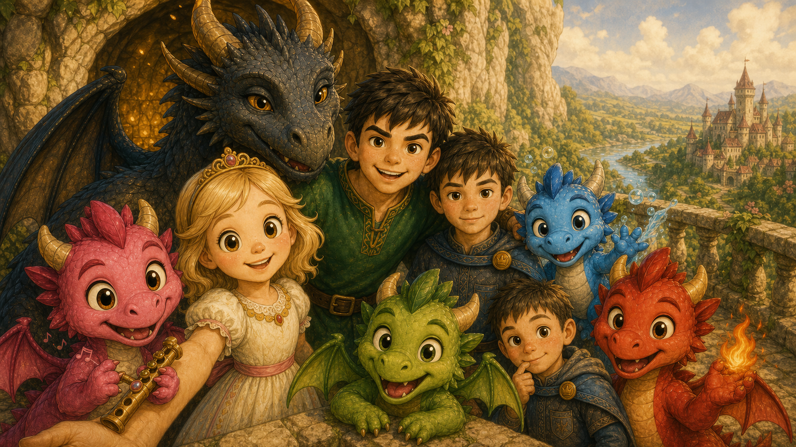

Rozprávky na večerné čítanie
Svet malých dráčikov
Štyri malé dráčiky robia detské hlúposti s dračími následkami. Pre deti dobrodružstvo, pre rodičov pokojná cesta rovno k rozprávke.

Rozprávky na večerné čítanie
Štyri malé dráčiky robia detské hlúposti s dračími následkami. Pre deti dobrodružstvo, pre rodičov pokojná cesta rovno k rozprávke.
